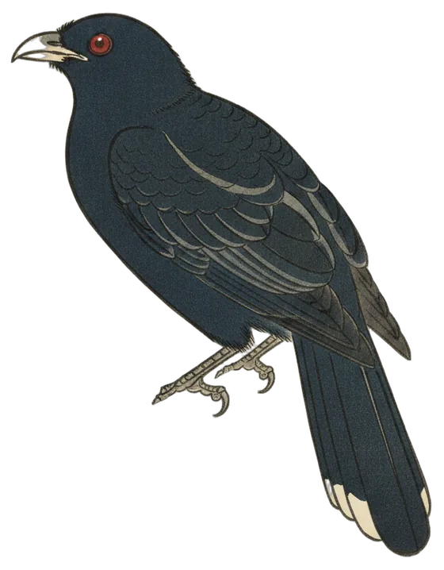

Station first
Pacific Koel makes its station debut
Heard four times, among 14 species at the station in the last 24 hours.

The Pacific Koel (Eudynamys orientalis) was heard four times in the 24 hours to 9:30 pm, first at 10:06 am and last at 10:08 am. Its clearest call scored 96% confidence.
It is the first time the station has recorded one. BirdNET's range model rates it a moderately common bird around Canberra. Atlas of Living Australia records show it is a summer migrant to the Canberra region, most often recorded in January, November and December.
- Calls
- 4
- First heard
- 10:06 am
- Best call
- 96%
- Days heard
- 1 of 54